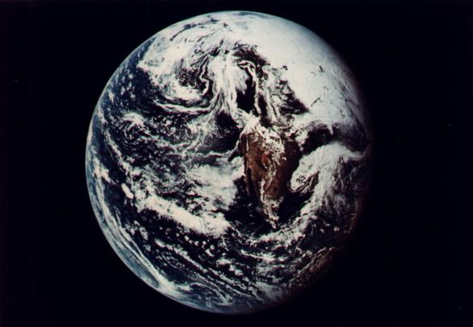
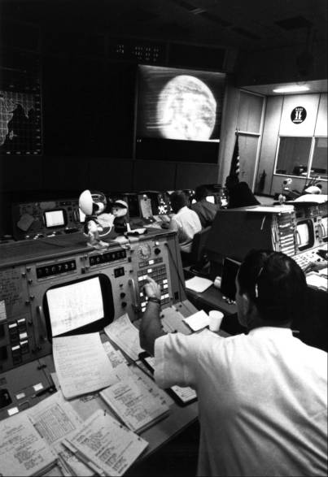
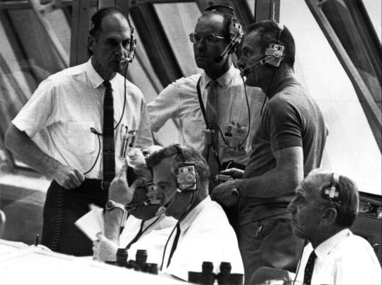
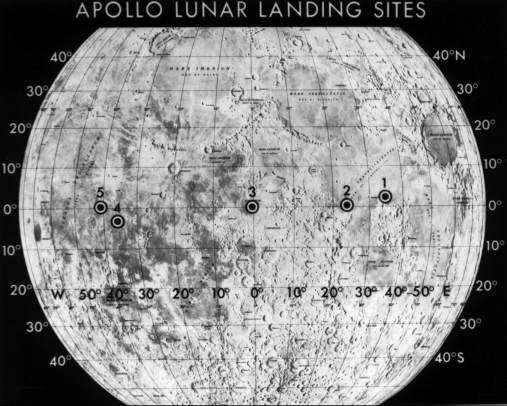
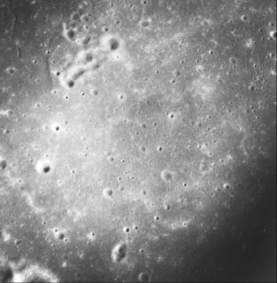
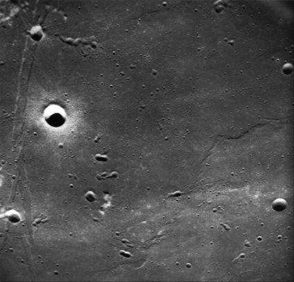
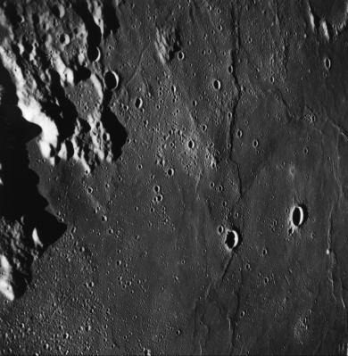
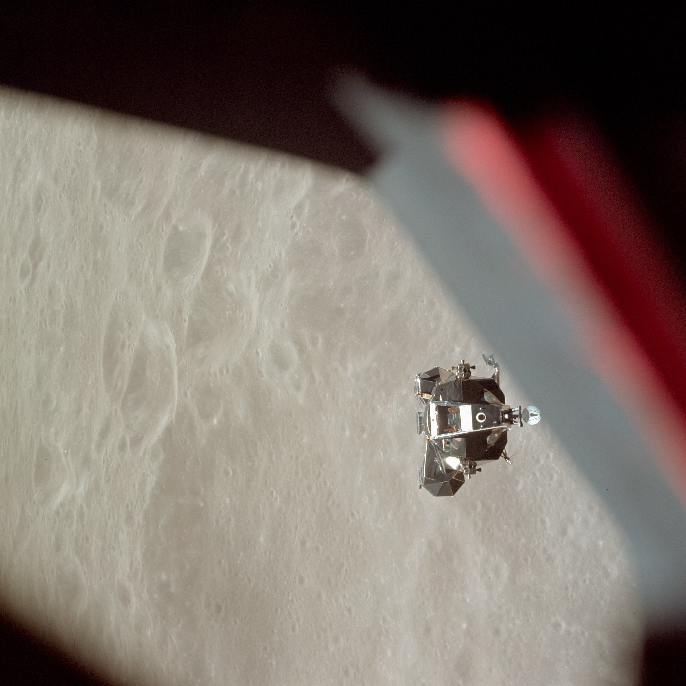
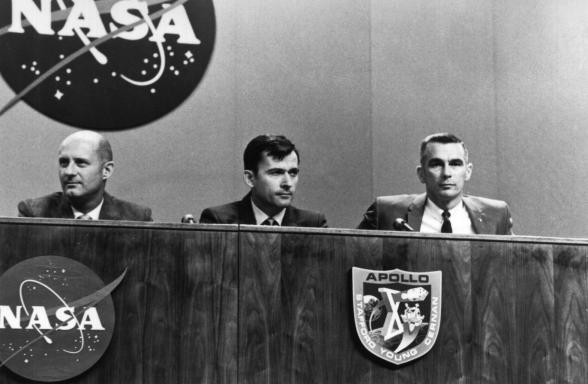

On 18 May 1969, a king,* some congressmen, other distinguished guests, and a hundred thousand other watchers waited at scattered vantage points around the Cape area. At 49 minutes past noon, Rocco Petrone's launch team sent Apollo 10 on its way to America's second manned rendezvous with the moon. Humming along at first like a Titan II, or so its Gemini-experienced crewmen felt, the gigantic Saturn V first stage suddenly slammed Stafford, Cernan, and Young forward and backward, until the cabin dials blurred before their eyes. Stafford tried to tell chief Flight Director Glynn Lunney's mission control team when the first stage of the vehicle dropped off but he could not squeeze the words out. When the remainder of the stack steadied, the S-II second stage (already firing) had the same pogo tendencies. The three astronauts had begun to wonder if the vehicles would hold together, especially the lunar module below them, when the S-IVB third stage fired, growling, rumbling, and vibrating as it shot into earth orbit.43

In the launch control room 18 May 1969, Apollo officials (standing left to right) George Low, Samuel Phillips, Donald Slayton, and (seated left to right) John Williams, Walter Kapryan, and Kurt Debus listen to the countdown for the launch that would send three astronauts toward the moon.
During the systems review period, the ride smoothed. Lunney checked the men at the monitors in the control room and they all voted to fire for translunar injection. Stafford's crewmen considered not wearing their helmets and gloves but "chickened out," as Young phrased it, and put them on. They probably found the extra garb comforting when the S-IVB fired, because the third stage again groaned and shook. None of the three were confident of being able to continue the trip much longer, and Cernan wondered how the mission could be safely aborted at this point in space. The guidance system kept Apollo 10 on a steady course, however, and they were on their way.44
When Young pulled the command module away from the S-IVB, the crew saw the panels that had housed the lunar module drift away. After the command module was flipped around, it was 45 meters away from the third stage, about three times farther than intended, but it would take only a little extra gas to get back for docking. As the CM moved around, the mission controllers on the ground watched the maneuvers, in "living color."

At 66,600 kilometers outward bound, the crew televised a near-circular view of the earth to Mission Control and the public.
Television had worked so well on other Apollo flights that NASA had decided to put a color system on Stafford's command module. Weighing only 5.5 kilograms, the Westinghouse camera included a 7.5-centimeter monitor to show the astronauts what they were transmitting. Now flight controllers watched along with the crew as Charlie Brown, perfectly aligned with his target, pulled up to Snoopy, latched onto him, and drew him out of his doghouse. Shortly thereafter, with signals to Houston through the big antenna dish at Goldstone, California, a vast populace saw a color view of a large portion of their western hemisphere from thousands of kilometers in space.45

They also photographed the view, showing much of the North American continent.
After checking tunnel, latches, and docking probe, the crewmen had a light workload as they coasted toward the moon. They were grateful for even such small jobs as firing the thrusters to make slight corrections in spacecraft attitude, but this was so seldom necessary they began to wonder if the jets were working. On occasion, however, when nothing was firing, the whole stack shimmied. They later speculated that this may have been caused by fuel sloshing. When making optical navigational sightings, the crew had trouble acquiring enough stars for an accurate reading. Without the optics, the men could see no stars at all for a long time. Finally, Stafford spotted a few dim orbs after he had traveled 190,000 kilometers into space. But not much navigating was needed; the course was so true that the service module propulsion system was used only once, to add 15 meters per second to their speed, at 26 hours into the voyage. This firing put the spacecraft on a lunar path that would lead the crew over the exact spot where the first landing might be made. The rest of the time the astronauts studied the flight plan, slept, ate, and beamed five excellent television transmissions back to the earth.46
Stafford, Cernan, and Young were the first Apollo pilots to be free from illness during the mission, although Cernan experienced a slight vestibular disturbance. Like all their colleagues who had flown before, once they unbuckled from the couches they had a stuffy feeling in their heads. This lasted for 8 to 10 hours for Stafford and Young; Cernan gradually lost the sensation over the next two days. He practiced "cardinal head movements" that the medics thought might help overcome his slight feeling of nausea. Although he was able to do the exercise for more than four minutes at a session by the seventh day of flight, when he returned to earth he lambasted the procedure, saying it must have been designed to bring on illness rather than to alleviate it.47
The crew slept well, although thruster firing bothered Cernan the first night. Later, when they were circling the moon, the men were glad that McDivitt's crew had suggested they carry a sleeping bag apiece. The spacecraft grew cold once the windows had been covered to darken the cabin for sleeping.
One major complaint the astronauts registered was about their water supply. They were supposed to chlorinate it at night; because of an error in procedures passed to them by flight control, Stafford had a double dose of chlorine when he took a drink during the first breakfast of the trip. This was unpleasant, but it posed no major problem. Something else in the water supply did. When earlier crews had complained about gas in the water system, a new water bag was designed, with a handle the crew could use to whirl the bag around to separate the gas from the water. It did not work. The gas settled to the bottom of the bag and then remixed with the water when the crew members tried to drink. The gas worried them; they could envision getting diarrhea, which would have been difficult to cope with during flight. They did have gas pains and cramps but, fortunately, nothing more.48
Poor water quality may have affected their appetites, for the astronauts on this flight were not big eaters. On occasion, they skipped meals. Stafford estimated they had enough food to last for 30 days. Not all the blame could be laid on the water, however; the food was still no epicurean delight. Back on earth in early May, Donald D. Arabian, chief of the Apollo Test Division, had tried a four-day supply of their rations. Arabian claimed to be "somewhat of a human garbage can," but even he lost his desire for food on this diet. The sausage patties, for example, tasted like granulated rubber and left an unpleasant taste. With all the difficulties of preparation, Arabian added, by the third day continuing the test was a chore. He did like the items that were closest to normal table foods. Stafford's crew also found some of the newer dishes that could be eaten with a spoon quite palatable. But the men dreaded reconstituting the dehydrated meals, knowing that the water contained so much gas.49
Unlike Borman's crew, which could not see the moon with the unaided eye until the spacecraft was almost upon it, Stafford's group spotted it on the second day of flight. On the earth, it looked like a waxing crescent, but Stafford and Young, with the help of earthshine, could see almost a full moon. Although the moon was much bigger at 200,000 kilometers above the earth, landmarks on the lunar surface still could not be picked out. Cernan also asked flight controllers if they thought he could really recognize the S-IVB stage 5,600 kilometers away, because that was what he thought he was seeing. The CapCom told him that the men in the control room were nodding their heads yes and that the distance between the two vehicles actually measured 7,400 kilometers.50
When Apollo 10 reached the lunar vicinity on 21 May, the controllers informed the crewmen that at one time or another more than a billion persons had watched their televised activities. But interest now focused on the exact moment when their craft would shoot around the moon and lose communications with the earth. At 74 hours 45 minutes into the mission, flight control predicted that loss of signal would come at 75 hours, 48 minutes, 24 seconds. The controllers had already determined that the ship would reach the moon 11 minutes later than scheduled, since there had been only one midcourse correction, rather than two. Its trajectory would be 110 kilometers above the lunar surface.51
The crew was impressed by the lunar landscape, although Stafford insisted it looked like a big plaster of Paris cast. The three found it almost incredible that someone back on earth had been smart enough to place them within 110 kilometers of the moon - but there they were. They caught just a glimpse of the surface a minute before they fired the service module engine to go into lunar orbit, an activity that required all their attention. The six-minute retrograde maneuver seemed interminable, just as it had to Borman's group, but the engine kept firing and their confidence in it kept growing. When the engine finally shut down and they were sure that it had done its job, Stafford and Cernan had time to look at the lunar surface. They likened one area to a volcanic site in Arizona. Finally Stafford forced his attention back inside the cabin and told his crewmates that he thought the best thing to say when they got back in radio contact was, "Houston, tell the earth we have arrived."52

Selected Apollo lunar landing sites. The Apollo 10 crew photographed Sites 1, 2, and 3.

Site 1 area was on the eastern side of the Sea of Tranquility.

Site 2 was on the southwestern part of the sea.

Site 3 was on the lunar equator, in Central Bay; topographic features are accentuated by the low-sun angle.
Stafford, Young, and Cernan were fascinated by how much more slowly they seemed to travel around the moon than they had around the earth. They liked the slower pace, because on the first circuit they would pass directly over the area where Apollo 11 was due to land two months later. They had barely rounded the corner before Stafford and Cernan began describing the physical features down the highway they called "U.S. 1," leading to the landing site. By the third circuit, the world was sharing the view on color television. Watchers could see the gray, white, black, and brownish tints of the landing site, which seemed to be free from boulders, providing a smooth landing field.53
Six hours after reaching the moon, Cernan and Stafford began getting the lander ready. The hatches, probe, and drogue were easily removed. As he entered the lunar module, Cernan was greeted by a snowstorm of mylar insulation, apparently sucked into the vehicle through a vent from the tunnel. The insulating material had come loose in the tunnel, and the crewmen had spent some time capturing and cleaning it up in the command module. Now they had the same job to do in the lunar module.
Cernan had floated head down through the tunnel into the lunar module. Because the two spacecraft were locked together from top to top, his own private world had a new orientation. He later commented that the best way to handle this psychologically was to slide through the hatch, look around, and then mentally assign an arbitrary up and down. Once he had accepted the new environment, he had no problems in checking, hauling in equipment, and getting things in order. The crew had intended to leave the passageway to the lander open after returning to the command ship, but the hardware was too bulky. It was simpler, and quite easy, to put the probe and drogue back into place.54
Flight control had planned to let the crew sleep until the last moment on 22 May, when Stafford and Cernan would leave Young and fly the lander down near the lunar surface. But, after playing "The Best Is Yet to Come" and sounding reveille, ground control found that the astronauts had stealthily risen, eaten breakfast, and quietly begun work on the flight plan checklist. Cernan removed the encumbrances from the tunnel and zipped over into the lunar module to get everything ready, while Young helped Stafford with his suit (a five-minute job even with assistance).** Cernan then came floating back into the command module and jumped into his suit. When flight control heard from them at the start of the tenth circuit, the two pilots were in the lander and closing off the tunnel.55
When Stafford and Cernan were ready for undocking, however, they found that the lunar module had slipped three and a half degrees out of line with the command module at the latching point, possibly because of loose mylar collecting on the docking ring. It might also have happened when Young, during docking, had forgotten to turn off the service module roll thrusters and flight control had been tardy in reminding him of the task. Whatever caused the problem, the crew feared separating the two craft might shear off some of the latching pins, possibly preventing redocking. Stafford and Cernan would be stranded in lunar orbit with no way back except by going out the lander hatch and making their way to the command module hatch - a dangerous undertaking. But Low, who was in the control room at the time, told Flight Director Lunney that as long as the misalignment was less than six degrees they could go ahead and undock.56
Just before Apollo 10 rounded the corner to the back of the moon, flight control passed the good news to Stafford. The two crewmen in LM Snoopy heard a "pow" as they broke free. Young, all alone in what now seemed to be an unusually large command module, turned on the television camera so the flight controllers back on the earth could help him inspect the lander. Meanwhile the lunar module landing gear had deployed and was in place. The lander's systems checked out well, especially the radar, the abort guidance system, the antennas, and the pressurization of the descent propulsion system. Everything looked good, and everybody was ready to go. Telling Young not to get too lonesome and not to go off and leave them, Stafford and Cernan announced that they were ready to go down and snoop around the moon.57
Young had used his service module thrusters to pull Charlie Brown nine meters away from the lunar module for the inspection. He then gave the same jets a spurt to thrust downward toward the moon until the two vehicles were three and a half kilometers apart. Stafford and Cernan were ready to try, for the first time, another of the operations with a significant Apollo abbreviation so cherished by the engineers - descent orbit insertion, or DOI. At nearly 100 hours into the mission, Stafford started the descent engine at minimum thrust - which slowly built up past 10 percent - and then 15 seconds later he increased it to 40 percent for 12 more seconds. The engine ran smoothly, with none of the chugging experienced on McDivitt's ride. Young tracked the burn optically and told the lunar module crewmen that they were moving away from him at more than 20 meters a second. Cernan did not think they were going that fast. "It's a very nice pleasant pace," he said. Now they could get a close look at a proposed landing site in the Sea of Tranquility, where Apollo 11 might set down in July.58 Stafford and Cernan had studied hard for what they were going to do. In a T-38 aircraft, they had simulated this trajectory above the earth. They had pored over charts and maps of the site, and they had scrutinized the area during their hours in lunar orbit. So the astronauts traveled easily down the approach path, calling out the names of craters, rilles, and ridges as they went along. They appeared to be traveling exactly over the track they wanted, reaching a low point of 14,447 meters above the surface. They took many pictures; then Stafford's camera failed as the film started to bind. He described the landing site as much like "the desert in California around Blythe." If a lander touched down on the near end, it would have a smooth landing, he said; but, if it wound up at the far end of the zone, extra fuel would be needed for maneuvering to a clear spot. Their landing radar worked perfectly when they tested it, and the pilots remarked that they had no visibility problems with lighting and sun angles.59
Young caught sight of the lunar module at a distance of 120 kilometers; Snoopy appeared to be running across the lunar surface like a spider. At other times, using a sextant, he spotted the craft as far away as 550 kilometers. An hour after the first descent burn, Stafford and Cernan fired the engine again, to shape the trajectory for their return to the command module. Shoving the throttle forward for 40 seconds and 100 percent thrust, Stafford was happy to note that there was still no chugging. Young tried to see the flames from the engine but could not. Although the lander's speed had increased by 54 meters per second, the crew again had the impression that acceleration was slow. During these activities, the lunar module had a "hot [open] mike," which was fine with Young, since it kept him informed of what was happening in the lander. But whenever he talked, he had a feedback of his own voice. Somebody would have to fix that before the next mission, he said.60
After Stafford's camera failed, he and Cernan had little to do except look at the scenery until time to dump the descent stage. Stafford had the vehicle in the right attitude 10 minutes early. Cernan asked, "You ready?" Then he suddenly exclaimed, "Son of a bitch!" Snoopy seemed to be throwing a fit, lurching wildly about. He later said it was like flying an Immelmann turn in an aircraft, a combination of pitch and yaw. Stafford yelled that they were in gimbal lock - that the engine had swiveled over to a stop and stuck - and they almost were. He called out for Cernan to thrust forward. Stafford then hit the switch to get rid of the descent stage and realized they were 30 degrees off from their previous attitude. The lunar module continued its crazy gyrations across the lunar sky, and a warning light indicated that the inertial measuring unit really was about to reach its limits and go into gimbal lock. Stafford then took over in manual control, made a big pitch maneuver, and started working the attitude control switches. Snoopy finally calmed down.61
For this first lunar module flight to the vicinity of the moon, the pilots were supposed to use the abort guidance system instead of the primary guidance system, to test performance in the lunar environment. The abort system had two basic control modes, "attitude hold" and "automatic." In automatic, the computer would take over the guidance and start looking for the command module, which was certainly not what the crew wanted to do just then. In correcting for a minor yaw-rate-gyro disturbance, the pilots had accidentally switched the spacecraft to the automatic mode, and the frantic gyrations resulted. From Cernan's startled ejaculation to Stafford's report that everything was under control took only three minutes. Flight control told the crewmen they had made an error in switching, but the system was fine. They could fire the ascent engine. After the firing, the lander flew what Stafford called a "Dutch roll," yawing and pitching and snaking along. When the engine shut down, however, to the crew's surprise the attitude and flight path to the command module were correct. From a maximum distance of 630 kilometers, the thrust from the ascent engine moved the lunar module to within 78 kilometers of the mother ship.62

Young, by himself in CM Charlie Brown, said that LM Snoopy carrying Stafford and Cernan close to the moon below looked like a spider crawling on the lunar surface. Young photographed the returning lunar module, which successfully demonstrated the lunar-orbit rendezvous operations.
As the lunar module approached, Young saw it through his sextant at a distance of 259 kilometers. Stafford and Cernan got a radar lock on the command module shortly after the insertion burn and watched with interest as the instrument measured the dwindling gap between the vehicles and demonstrated the theories of orbital mechanics in actual practice. Cernan especially liked the steady communications that kept both crews aware of what was happening. After watching the command module from as far away as 167 kilometers and then losing sight of it at sunset, the lunar module pilots saw Charlie Brown's flashing light with their unaided eyes at 78 kilometers. At last, the two craft were only eight meters apart, and the relative speed between them was zero. Stafford did find the ascent stage a little difficult to hold steady, just as Conrad had suspected, but Young slid the probe smoothly into the dead center of the drogue. Stafford rammed the lunar module forward, and the capture latches closed with a loud bang.63
Stafford and Cernan had been gone for more than eight hours, and they were ready to get back into the command module and rest. Transfer ring equipment and closing the tunnel were easy. When all three were settled in, they cut the lander loose. Flight control then fired the ascent engine to fuel depletion (249 seconds) and sent the lunar module into solar orbit. The crew watched it move away; Snoopy was soon out of sight. Stafford and his crew went back to tracking landmarks on the surface below for the upcoming lunar landing mission.64
After 31 circuits, the crew fired the service module engine to begin the return to the earth. On 26 May 1969, Apollo 10 streaked through the early morning darkness like a shooting star, to splash down in the Pacific 690 kilometers from Samoa and only 6 kilometers from the prime recovery ship. The journey had taken 192 hours, 3 minutes, 23 seconds. A helicopter picked the crew up and carried them to the U.S.S. Princeton within the hour. This fantastic voyage was over and had revealed absolutely no reason why Apollo 11 could not negotiate the final few kilometers to the lunar surface. The trail had been blazed.65

Apollo 10 crewmen Stafford, Young, and Cernan (left to right) meet the press at Manned Spacecraft Center on 7 June 1969 after return from their lunar-orbit mission.
* King Baudoin and Queen Fabiola of the Belgians flew to KSC on Air Force One two hours before liftoff.
** Getting into and out of the suits in the small lunar module would be difficult, the crewmen realized, although they found that putting them on was not too great a chore. Simpler procedures would have to be worked out for crews that would remain in the lander for longer periods.
43. Richard D. Lyons, "The Fashionable People Fly In to View Launching," New York Times, 19 May 1969, p. 31; "Apollo 10 Debriefing," pp. 3-1, 3-3, 3-4, 3-6; Willard R. Hawkins et al., "Biomedical Evaluation of the Apollo 10 Mission," MSC Internal Note 71-DD-04, July 1971, p. 8-1; Kraft memo, "Flight Control Manning for Apollo 10," 2 lay 1969, with enc., "MCC/MOCR Manning"; MSC, "Apollo 10 Technical Air-to-Ground Voice Transmission (GOSS Net 1)," May 1969, pp. 3-4, 18-19; MSC, "Apollo 10 Mission Report," MSC-00126, August 1969, p. 9-2.
44. MSC, "Apollo 10 Mission Commentary," 18 May 1969, tapes 22-1, 26-1; "Apollo 10 Debriefing," pp. 4-1, 4-4, 5-1 through 5-3; "Apollo 10 Voice," pp. 25, 29; Glynn S. Lunney et al., "Flight Directors Report, Apollo 10" [ca. June 1969], p. 5; "Apollo 10 Mission Report," p. 9-3.
45. "Apollo 10 Debriefing," pp. 5-4, 5-6, 5-8 through 5-10; Lunney et al., "Flight Directors Report," p. 5; Hage to Gerald M. Truszynski, "Apollo 10 Color TV," 9 April 1969; Low to Phillips, 9 April 1969; Hage to Truszynski, "Apollo 10 Color TV," 9 May 1969; Apollo 10 press kit, p. 33; 10:56:20 PM, EDT, 7/20/69: The Historic Conquest of tile Moon as Reported to the American People by CBS News over the CBS Television Network (New York: CBS,1970); Ann Hodges "Unique TV System Nets Living Color From Space," Houston Chronicle, 19 May 1969; "Flight of Apollo 10," p. 5; "Apollo 10 Mission Report," pp. 9-3, 9-4, A-4; "Apollo 10 Voice," pp. 31-35, 39, 41, 42.
46. "Apollo 10 Debriefing," pp. 6-2, 6-4, 6-5, 6-14; "Apollo 10 Voice," pp. 44-45, 166-67, 207, 221, 253-54; "Apollo 10 Mission Report," p. 3-1; Hage memo, "Mission Director's Summary Report, Apollo 10," 26 May 1969.
47. Hawkins et al., "Biomedical Evaluation of Apollo 10," pp. 1-1, 8-l, 8-2; "Apollo 10 Debriefing," pp. 4-5, 22-24 through 22-27.
48. "Apollo 10 Voice," pp. 89-91, 100, 107-108, 181-82; "Apollo 10 Debriefing," pp. 6-14, 16-23, 21-11; "Apollo 10 Mission Report," pp. 9-6, 12-l; Hawkins et al., "Medical Evaluation of Apollo 10," pp. 6-1, 6-3 through 6-5, 8-5; Lunney et al., "Flight Directors Report," p. 6; Elton M. Tucker TWX to North American, Attn.: Drucker, "Spacecraft 106 Gas Saturation of the Potable Water," 3 June 1969; Richard L. Sauer and David J. Calley, "Potable Water System," AER TN S-363 (MSC-07508), January 1973.
49. Hawkins et al., "Medical Evaluation of Apollo 10," pp. 7-1 through 7-3; Arabian to Rita M. Rapp, "Evaluation of four-day food supply," 8 May 1969; "Apollo 10 Debriefing," pp. 6-13, 21-2 through 21-10, 21-12, 21-13.
50. "Apollo 10 Mission Commentary," 19 May 1969, tapes 96-1, 96-2; "Apollo 10 Voice," pp. 128-29, 213-14; "Apollo 10 Debriefing," p. 17-2.
51. "Apollo 10 Voice," pp. 278, 279; Lunney et al., "Flight Directors Report," p. 11.
52. MSC, "Apollo 10 Onboard Voice Transcription, Recorded on the Command Module Onboard Recorder Data Storage Equipment (DSE)," June 1969, pp. 47-56, 71, 74; "Apollo 10 Debriefing," p. 7-1; "Apollo 10 Voice," pp. 307-308; "Apollo 10 Mission Report," pp. 3-1,9-7.
53. "Apollo 10 Voice," pp. 311-15, 338-44; "Flight of Apollo 10," p. 7.
54. "Apollo 10 Debriefing," pp. 7-5, 7-7 through 7-9, 7-14; "Apollo 10 Voice," pp. 346-48, 369, 371, 374; MSC, "Apollo 10 Mission Failure anti Anomaly Listing," MSC-00117, June 1969, p. 11; "Apollo 10 Mission Report," p. 3-1.
55. "Apollo 10 Voice," pp. 387-88, 394; "Apollo 10 Debriefing," pp. 6-3, 8-1, 8-2, 8-4, 8-6; "Apollo 10 Mission Report," pp. 9-8, 9-9.
56. "Flight of Apollo 10," p. 8; Apollo 10 press kit, p. 56; Lunney et al., "Flight Directors Report," pp. 14-17.
57. "Apollo 10 Voice," pp. 433, 435, 440-41; "Apollo 10 Debriefing," pp. 8-9 through 8-11, 8-20 through 8-29; "Apollo 10 CM Voice," pp. 203-209; Mission Report: Apollo 10, NASA EP-70 (Washington, 17 June 1969).
58. Hage memo, 26 May 1969; Lunney et al., "Flight Directors Report," p. 17; "Apollo 10 Debriefing," pp. 9-1, 9-4; "Apollo 10 CM Voice," pp. 210-13; "Apollo 10 Mission Report," p. 8-30; Hammock, Currie, and Fisher, "Descent Propulsion System," pp. 27-28; "Apollo 10 Voice," p. 458.
59. "Apollo 10 Debriefing," pp. 9-6, 9-8, 9-9; "Apollo 10 Failure Listing," p. 30; "Apollo 10 Voice," pp. 50, 457, 459-62, 500; "Apollo 10 Mission Report," p. 1-1.
60. "Apollo 10 Mission Report," p. 4-11; "Apollo 10 Debriefing," pp. 9-10 through 9-12, 9-14, 9-50; "Apollo 10 Voice," pp. 466-67, 480.
61. "Apollo 10 Debriefing," pp. 9-16, 9-18 through 9-20, 9-22; "Apollo 10 Voice," pp. 483-85, 490.
62. "Flight of Apollo 10,"pp. 9-10; Hage memo, 26 May 1969; "Apollo 10 Mission Report," pp. 4-1, 8-34, 15-27 through 15-30; routing slip, Low to Gilruth, 2 July 1969, with att., Low, "Apollo 10 Attitude Excursions at Staging," 1 July 1969; Lunney et al., "Flight Directors Report," p. 18; "Apollo 10 Debriefing," p. 9-24; "Apollo 10 Mission 5-Day Report," MSC-PT-R-69-14, May 1969, p. 12; "Apollo 10 Voice," pp. 486-87, 499-508.
63. "Apollo 10 Voice," pp. 499, 503, 506, 511-12; "Apollo 10 Debriefing," p-p. 9-27, 9-31, 9-36, 9-43 through 9-47; "Apollo 10 CM Voice," pp. 244-59; "Apollo 10 Mission Report," p. 4-11.
64. "Apollo 10 Debriefing," pp. 9-52, 9-53; "Apollo 10 Voice," pp. 527-28, 534-35, 575-78, 591, 597; "Apollo 10 Mission Report," pp. 3-2, 8-34; "Apollo Summary Report," p. 2-34.
65. "Apollo 10 Voice," pp. 611, 656-57; Hage memo, 26 May 1969; "Apollo 10 CM Voice," pp. 459-62; "Apollo 10 Mission Report," pp. 3-2, 3-4; "Flight of Apollo 10," pp. 1, 11.